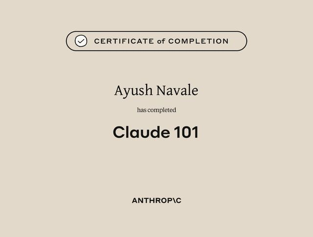
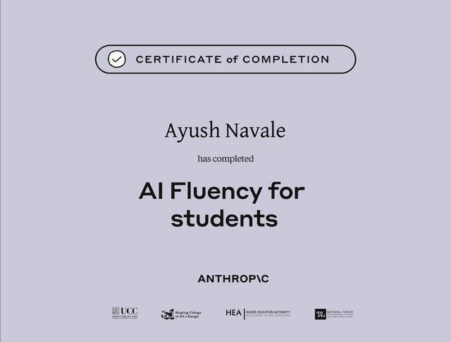
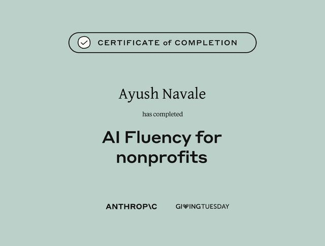
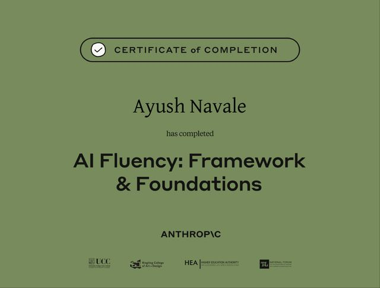
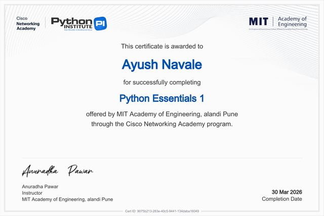
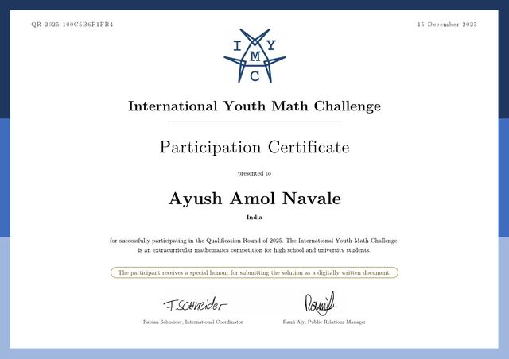
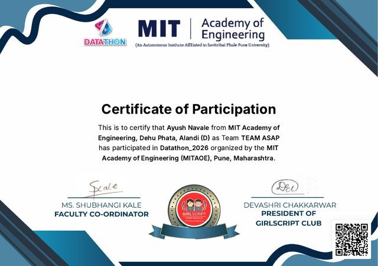

Profile
Ayush Amol Navale
B.Tech Information Technology
Artificial Intelligence Track
MIT Academy of Engineering, Pune
- AI Explorer
- Developer
- Technology Enthusiast
- Problem Solver
- Innovation-focused Student
Ayush Navale · AI Explorer
Exploring Artificial Intelligence, engineering intelligent solutions and building meaningful digital experiences.
02 / About
Profile
B.Tech Information Technology
Artificial Intelligence Track
MIT Academy of Engineering, Pune
Introduction
I'm an Information Technology student at MITAOE Pune with a strong interest in programming, problem-solving and real-world applications. I'm driven by curiosity and a wish to build meaningful software, and I treat continuous learning as the foundation of becoming a good developer. Outside coursework I keep adding certifications, from Anthropic's AI Fluency series and Claude 101 to Cisco's Python Essentials.
How I solve problems
I start by understanding what is actually going wrong, break it into smaller pieces, and test each piece before moving on. Whether it's a pathfinding bug or a confusing interface, the goal stays the same: find the root cause, then build the clearest fix.
What I explore
Education
03 / Skills
Programming
Frontend
AI & Data
Database
Tools
Working style
04 / Work
A smart navigation system for the MIT Academy of Engineering campus: an interactive map and timetable viewer that finds routes between buildings and rooms using A* and Dijkstra's algorithm.
Built around
Participated as Team ASAP in Datathon 2026, organized by MITAOE with the GirlScript Club. The team analyzed a real-world dataset and presented data-driven findings within a strict time limit.
Built around
A centralized campus platform for discovering clubs, managing memberships and organizing events.
Built around
An AI-powered network diagnostics concept that identifies connectivity issues, finds root causes and suggests troubleshooting solutions.
Built around
An intelligent network monitoring and diagnostics project involving packet analysis, rule-based detection and a dashboard.
Built around
An AI-assisted hypoglycemia prediction and carb-counting concept designed around Indian T1D diets.
Built around
05 / Timeline
2023
Completed secondary school with the Maharashtra State Board, building a foundation in Science and Mathematics.
2023 – 2025
Studied Physics, Chemistry and Mathematics with the Maharashtra State Board.
2025
Began a B.Tech in Information Technology at MITAOE, Pune, now on the Artificial Intelligence track.
2025
Took part in the International Youth Math Challenge 2025 and passed the qualification round.
March 2026
Completed both Python Essentials courses through the Cisco Networking Academy program at MITAOE, on 30 and 31 March 2026.
2026
Competed as Team ASAP in the MITAOE Datathon, analyzing a real-world dataset under a strict time limit.
2026
Took part in the Cisco AICTE Virtual Internship Program 2026.
Date to be added
Completed JavaScript Essentials 1 and 2, strengthening the language foundations behind this site.
Ongoing
Completed Anthropic's Claude 101 and AI Fluency courses, and keep building projects across web, data, networking and health-tech ideas.
06 / Milestones

Anthropic
Anthropic
Certificate of completion
View PDF of Claude 101 (opens in a new tab)
Anthropic
Anthropic
Certificate of completion
View PDF of AI Fluency for Students (opens in a new tab)
Anthropic
Anthropic with GivingTuesday
Certificate of completion
View PDF of AI Fluency for Nonprofits (opens in a new tab)
Anthropic
Anthropic
Certificate of completion
View PDF of AI Fluency: Framework & Foundations (opens in a new tab)
Cisco Networking Academy
Cisco Networking Academy via MITAOE
Completed 30 March 2026
View PDF of Python Essentials 1 (opens in a new tab)Cisco Networking Academy
Cisco Networking Academy via MITAOE
Completed 31 March 2026
View PDF of Python Essentials 2 (opens in a new tab)
Mathematics
International Youth Math Challenge
2025
View PDF of IYMC Participation Certificate (opens in a new tab)Mathematics
International Youth Math Challenge
2025 · Qualification round passed
View PDF of IYMC Performance Report (opens in a new tab)
Data
MIT Academy of Engineering (MITAOE)
Team ASAP · 2026
View PDF of Datathon 2026 Participation (opens in a new tab)Internship
Certification
Certification
07 / Open source
Contribution activity
Loading contribution activity…
Loading public repositories…
08 / Contact
Artificial Intelligence, networking diagnostics and web development, alongside his B.Tech in Information Technology at MIT Academy of Engineering, Pune.
His public repositories are on GitHub at SymbioteX01. Project-specific links will appear on the project cards as they are published.
Some are academic or competition work, like Campus Compass and Datathon 2026, and others are described as concepts, such as NetPulse and HypoGuard AI. Each card is labeled accordingly.
Email is the quickest route, using the contact card above. GitHub works too. A LinkedIn link will be added soon.